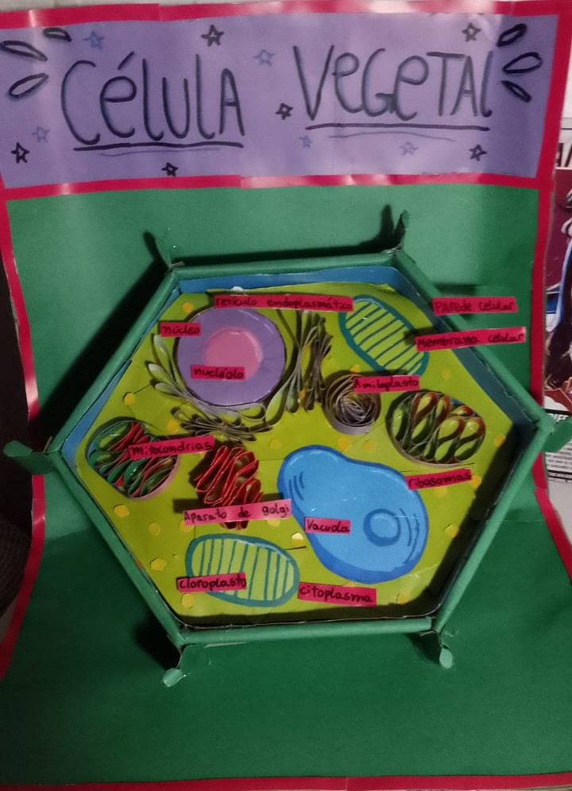

célula vegetal
Toda planta é feita de células, e cada uma funciona como uma pequena fábrica. Dentro da célula vegetal, estruturas diferentes trabalham juntas: captam a luz do sol, produzem energia, guardam água e mantêm o formato da célula.
Neste site você vai conhecer cada uma dessas estruturas, entender o que ela faz e ver o que diferencia a célula vegetal da célula animal.
Ver as estruturas